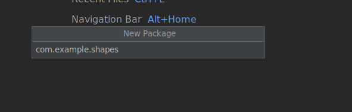

Lab 10: Java Object Orientated Programming
Using IntelliJ you are going to do some Object Orientated Programming.
- Open IntelliJ
- Create a new project
- Call it
Shapeslike the screen shot below. - Note you can use any JDK for this exercise, I am using JDK 11.0.13
- Call it
Step 1
First thing is to right click 'src' in the project view add a new package and call it com.xample.shapes.

Right click the package, and create a new Java class file called main and you should have the following.

Now replicate the following:
public class main {
public static void main(String[] args) {
}
}
Step 2
Now we need to create a new class called shape, by right clicking the package and new Java class.
First off we are going to refactor line 3, public class shape { to abstract class Shape {
Note:
An Abstract class lets you pretend something exists when it doesn't so you can implement it properly later when it does exist without needing the details up front. It's also extensible, and can be applied to a variety of other classes.
In other words; makes a class abstract if you want some common methods and members in a parent class and do not want anyone to instantiate it, but do want to instantiate sub-classes of that class. It also allows you to have methods that are not implemented (and therefore required to be implemented by a sub-class) just like an interface.
Now lets create some private variables that can be used to draw a shape, the x and y coordinates.
abstract class Shape {
private int x;
private int y;
Next let's create our constructor...
// constructor
Shape(int newx, int newy) {
moveTo(newx, newy);
}
Note:
A constructor is a special method that is used to initialise objects. The constructor is called when an object of a class is created. It can be used to set initial values for object attributes.
Next we need to create some accessors (getters and setters) for these private variables x & y:
// accessors for x & y
int getX() { return x; }
int getY() { return y; }
void setX(int newX) { x = newX; }
void setY(int newY) { y = newY; }
Now that we will be able to get and set our coordinates we can start to draw, well pretend to as this is a terminal. You will see that we only use the set methods for moving the to a new point on the screen.
// move the x & y position
void moveTo(int newx, int newy) {
setX(newx);
setY(newy);
}
Next we need to have a change in position or else we only have one point we stay on continously, we call change delta or \(\Delta \):
void rMoveTo(int deltax, int deltay) {
// we call the method moveTo() by getting the current
// position and adding the next position to it.
moveTo(getX() + deltax, getY() + deltay);
}
Finally, for this class, we will add a method to "virutally" draw the shape:
abstract void draw();
Below is the full script for the abstract class Shape.
abstract class Shape {
private int x;
private int y;
// constructor
Shape(int newx, int newy) {
moveTo(newx, newy);
}
// accessors for x & y
int getX() { return x; }
int getY() { return y; }
void setX(int newX) { x = newX; }
void setY(int newY) { y = newY; }
// move the x & y position
void moveTo(int newx, int newy) {
setX(newx);
setY(newy);
}
// we call the method moveTo() by getting the current
// position and adding the next position to it
void rMoveTo(int deltax, int deltay) {
moveTo(getX() + deltax, getY() + deltay);
}
// virtual draw method
abstract void draw();
}
Step 3
Now we need to create two more classes the first being a Circle.
Modify the newly created Circle class to look the below code:
class Cicle extends Shape {
}
A circle needs a radius so, much like the Shape class we need a private variable for the radius:
class Cicle extends Shape {
private int radius;
}
Now we need a constructor:
// constructor
Circle(int centerX, int centerY, int newRadius) {
super(centerX, centerY);
setRadius(newRadius);
}
Did you notice the super(centerX, centerY), this passes the variables to the Shapes class constructor.
Next comes the accessors again for the private variable radius:
// accessors for the radius
int getRadius() { return radius; }
void setRadius(int newradius) { radius = newRadius; }
Now we can "draw" the circle:
// draw the circle
void draw() {
System.out.println("Drawing a Circle at:(" + getX() + ", " + getY() +
"), radius " + getRadius());
}
See below the full Circle class code:
class Circle extends Shape {
private int radius;
// constructor
Circle(int centerX, int centerY, int newradius) {
super(centerX, centerY);
setRadius(newRadius);
}
// accessors for the radius
int getRadius() { return radius; }
void setRadius(int newradius) { radius = newradius; }
// draw the circle
void draw() {
System.out.println("Drawing a Circle at:(" + getX() + ", " +
getY() + "), radius " + getRadius());
}
}
Now we are ging back to Shapes Class and are going to use our new Circle class.
Replicate the following:
public static void main(String[] args){
// create a shape instance
Shape[] scribble = new Shape[1];
scribble[0] = new Circle(15, 25, 8);
Here we have called our Shape class and made an array of objects, Shape[] scribble = new Shape[1]. In the first index, 0 we have created a new cirlce with starting position x, y and radius.
Now lets "draw" it using the draw() and rMoveTo() methods of the Shape class:
// iterate through the list and handle shapes polymorphically
for (int i = 0; i < scribble.length; i++) {
scribble[i].draw();
scribble[i].rMoveTo(100, 100);
scribble[i].draw();
}
Make sure your code looks like below, and then run it:
public static void main(String[] args){
// create some shape instances
Shape[] scribble = new Shape[1];
scribble[0] = new Rectangle(10, 20, 5, 6);
scribble[1] = new Circle(15, 25, 8);
// iterate through the list and handle shapes polymorphically
for (int i = 0; i < scribble.length; i++) {
scribble[i].draw();
scribble[i].rMoveTo(100, 100);
scribble[i].draw();
}
}
You should see as an output:

Step 4
Let's add a new class, Rectangle.
Replicate the following code:
class Rectangle extends Shape {
private int width;
private int height;
// constructor
Rectangle(int newx, int newy, int newwidth, int newheight) {
super(newx, newy);
setWidth(newwidth);
setHeight(newheight);
}
// accessors for the width & height
int getWidth() { return width; }
int getHeight() { return height; }
void setWidth(int newwidth) { width = newwidth; }
void setHeight(int newheight) { height = newheight; }
// draw the rectangle
void draw() {
System.out.println("Drawing a Rectangle at:(" + getX() + ", " + getY() +
"), width " + getWidth() + ", height " + getHeight());
}
}
Go back to Shapes class file and modify to look like the following:
public static void main(String[] args){
// create some shape instances
Shape[] scribble = new Shape[2];
scribble[0] = new Circle(15, 25, 8);
scribble[1] = new Rectangle(15, 25,100,250);
// iterate through the list and handle shapes polymorphically
for (int i = 0; i < scribble.length; i++) {
scribble[i].draw();
scribble[i].rMoveTo(100, 100);
scribble[i].draw();
}
Rectangle arect = new Rectangle(0, 0, 15, 15);
arect.setWidth(30);
arect.draw();
}
Notice now how we have increased our scribble array and we are now drawing a rectanlge indepently of scribble to, by creating an object of the class rather than the abstract of Shape.
Run this and you should see as an output:

Step 5
Let's modify the Circle class so that it can print out information about the area, circumference and perimeter.
double area(){return Math.PI * getRadius() * getRadius();}
double circumference(){ return 2*Math.PI * getRadius();}
double perimeter(){return Math.PI * (2 *getRadius());}
// draw the circle
void draw() {
System.out.println("Drawing a Circle at:(" + getX() + ", " +
getY() + "), radius " + getRadius() + " and area is: "
+area() + ", circumference: "+ circumference()+ ", perimeter: " + perimeter());
}
Once done, run the code again.

Step 6
Now do it for the Rectangle class, and create a Dodecahedron class to do similar functionality.